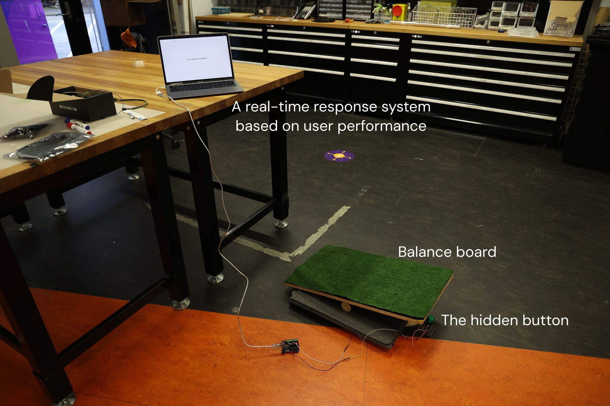
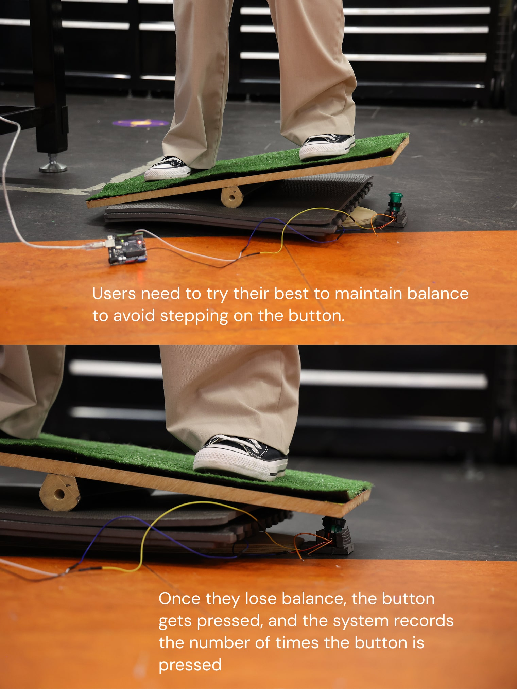
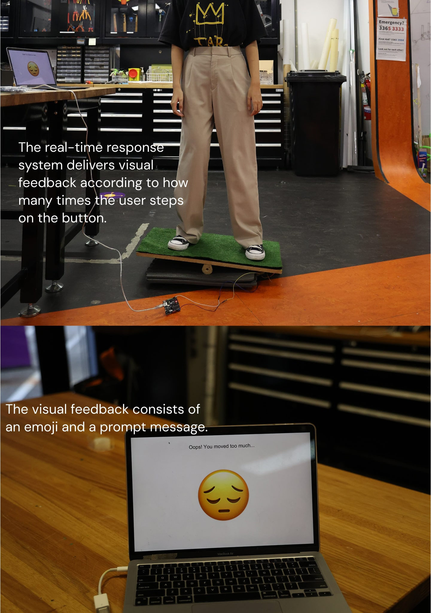
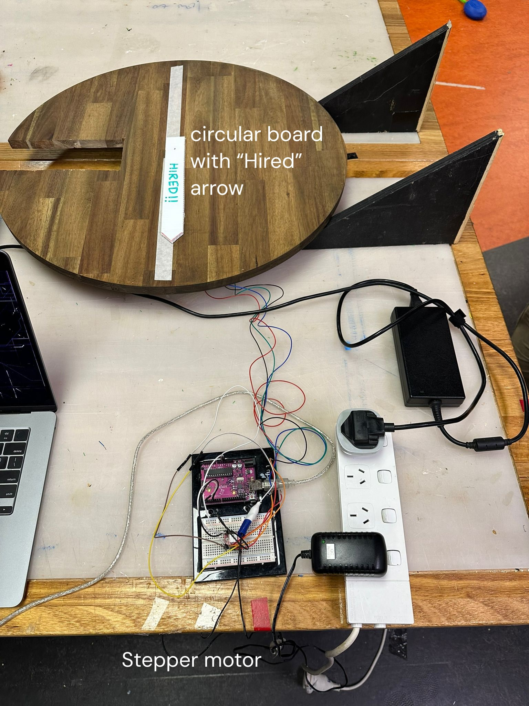
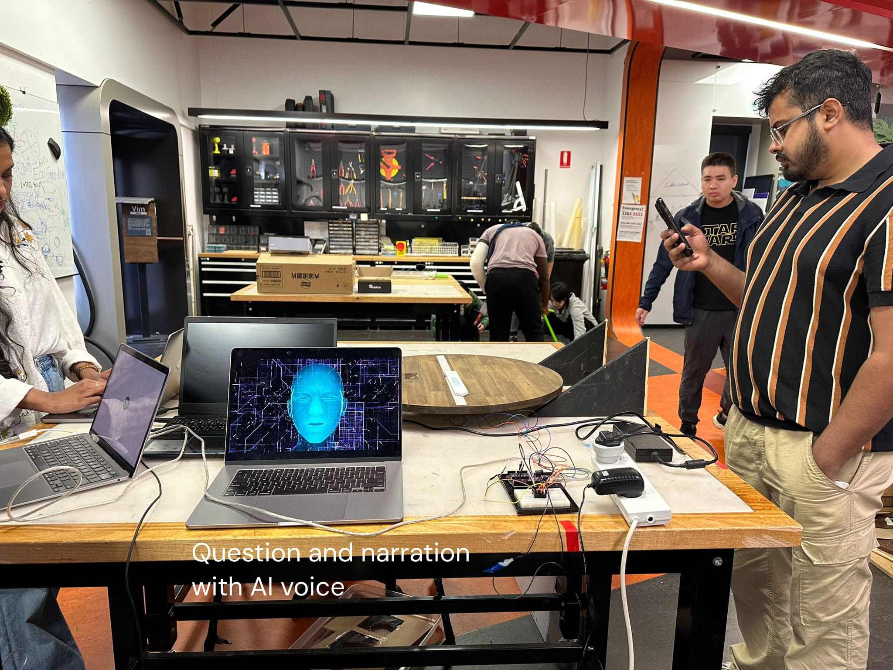
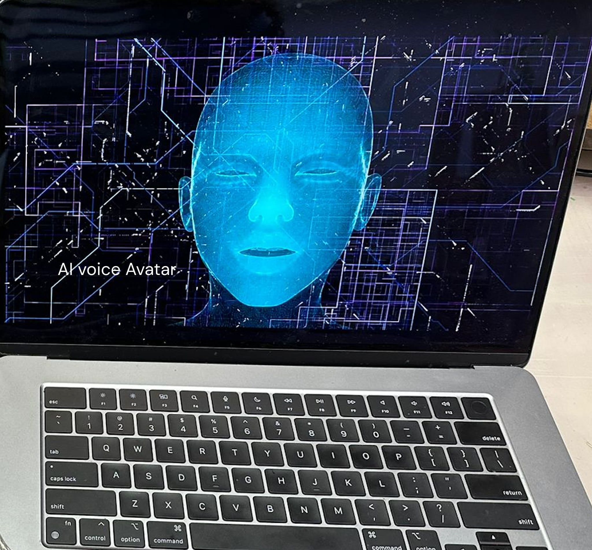
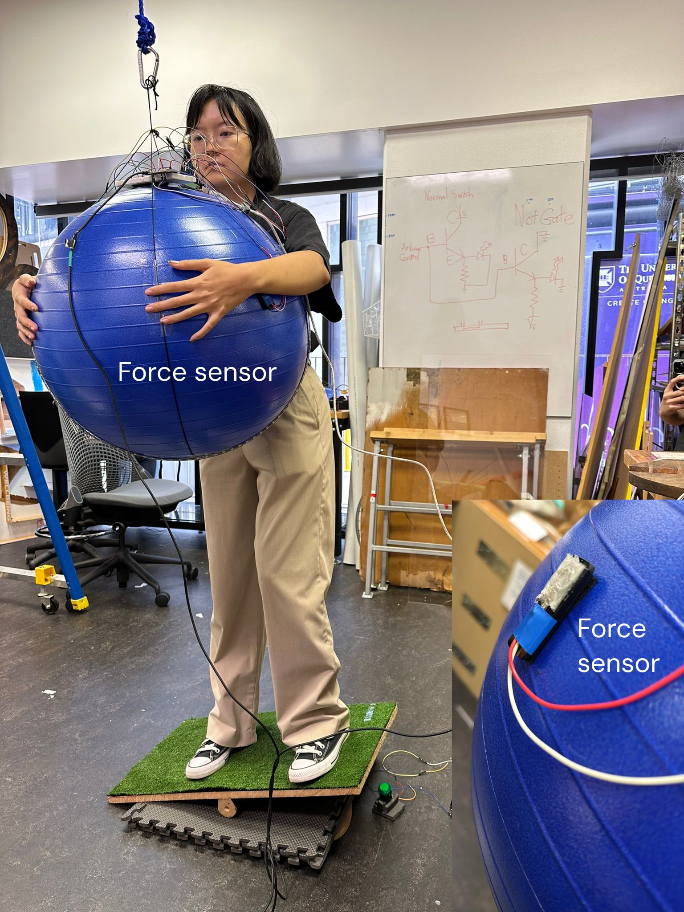
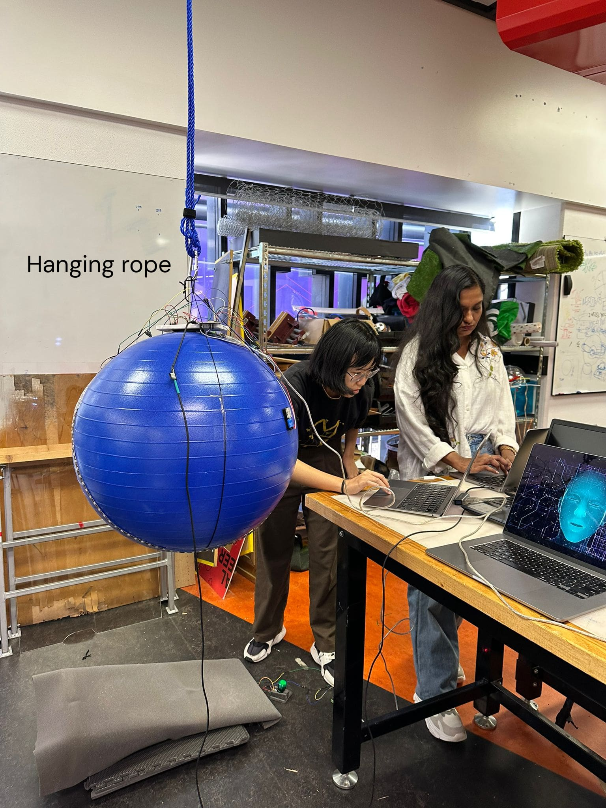
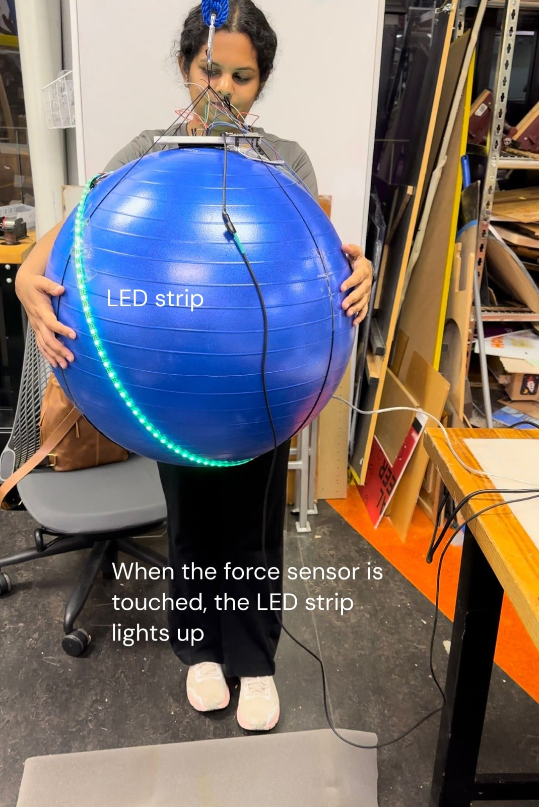

"AI on Trial" is an interactive installation that explores data physicalisation through the lens of “The Future of Work.”
It critiques the growing role of AI in hiring processes systems that reduce complex human qualities into simplified, quantifiable data.
While such technologies promise speed and objectivity, they often overlook context, leading to bias, misjudgment, and the loss of the human element.
Framed as a parody of AI-driven recruitment tools, our satirical game invites participants to stand on balance boards and undergo a mock “job interview.”
Behind the scenes, an AI-like system monitors seemingly irrelevant data such as body stability, pressure on hidden sensors, and even clothing colour.
This information is translated into tangible feedback through LED lights, screen visuals, and a spinning arrow that arbitrarily announces whether the participant is “hired” or not.
What makes "AI on Trial" distinctive is its use of embodied interaction and absurd metrics to highlight the invisible flaws of algorithmic decision-making.
For instance, frequent button presses caused by slight shifts in balance are interpreted as “fidgetiness,” which could count against a candidate.
The randomness of the spinning arrow finalises the outcome, reinforcing the absurdity of using automated systems for nuanced human judgments.
By turning the interview process into a game, the project uses humour and exaggeration to provoke critical reflection.
It challenges participants to question the legitimacy of AI assessments and the criteria on which decisions are made.
Through playful mechanics and sharp social commentary, "AI on Trial" exposes the dangers of over-reliance on automation in hiring, advocating for a future where efficiency doesn't come at the cost of fairness or humanity.








